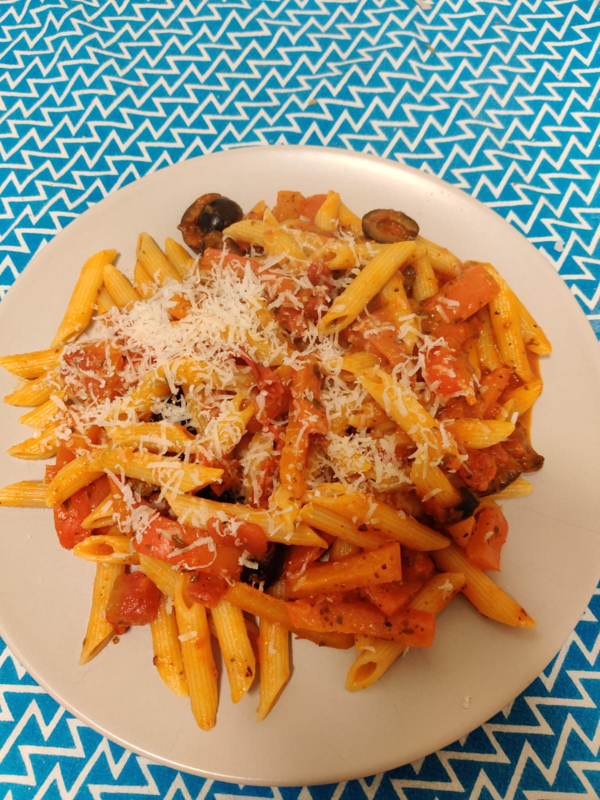

Tomato Pasta with Bell Peppers

Description
This recipe uses a readymade tomato sauce to prepare a delicious Italian pasta dish and serve 2 people.
This easy-to-follow recipe is a life saver for last-minute plans.
Ingredients
- Tomato Sauce with herbs (from supermarket)
- 2 Bell peppers
- 100g Penne pasta
- Parmesan cheese
Steps
- Bring water to a boil in a pot and add the pasta to the boiled water.
- While the pasta cooks, cut the bell peppers into thin long strips.
- Put the tomato sauce and the strips in a frying pan and cook on low heat until the strips soften to a desired texture.
- When the pasta is ready, add it to the fry pan. To preserve softness of the pasta, do not cook the pasta in the pan for too long.
- Serve and garnish with grated parmesan cheese.